Предыдущая часть - "Возрождение"
Название нового стиля происходит от итальянского слова barocco, что значит «причудливый, странный, склонный к излишествам», или от названия жемчужины неправильной формы – perola baroca.
Этот стиль появился в ХVI – XVII вв. в итальянских городах Риме, Мантуе, Венеции, Флоренции, и затем распространился на другие страны Европы (вплоть до середины ХVIII в.) Искусство барокко призвано было прославлять могущество знати и церкви (в особенности католической), создавать в храмах и дворцах атмосферу пышности и великолепия, а также внушать идеи свободы и созидательной мощи человека.
Главные особенности этого стиля – торжественность, величавость, способность выразить наслаждение жизнью и её полноту. А также – монументальность и динамизм. Язык этой живописи богат контрастами, игрой света и тени, оттенками цвета. Все эти средства направлены к одной цели – максимальной выразительности чувства и мысли.
Художник барокко черпает свои сюжеты из Библии и античной мифологии – они наиболее уместны в храмах и дворцах. Земная жизнь являет себя разве что в портретах (поскольку они пишутся с натуры), а также в произведениях художников независимого духа и незаурядной смелости (самый яркий пример – Караваджо.
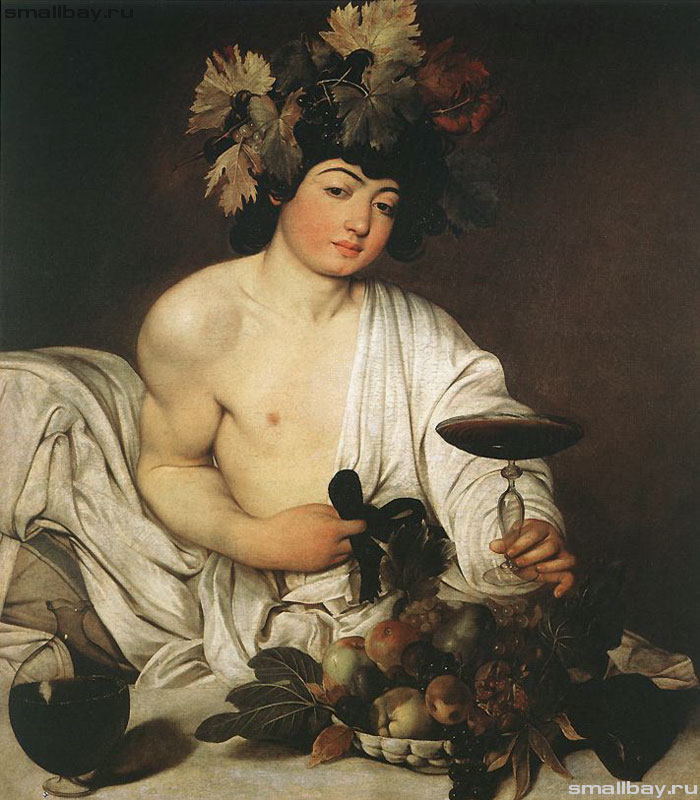
Эпоха барокко породила множество художников различных специальностей – живописцев, скульпторов, архитекторов, ювелиров и пр. Это было естественным следствием социально-экономических преобразований общества в данную эпоху. Мелкие княжества объединяются в государства, образуются монархии с самодержавной властью короля, поддержанной властью высшего духовенства. Обновляются экономические и политические основы жизни общества. Появляется широкий контингент заказчиков живописи, скульптуры и прочих искусств. Художники оказываются весьма востребованы. Естественно, они выполняют социальный заказ – поддержка идеологии и удовлетворение вкусов владельцев капитала.
Однако – такова неодолимая сила искусства – помимо классовых заказов, оно служит также выражению общечеловеческих идей и стремлений. В этом можно убедиться, рассматривая произведения художников стиля барокко.
В данном тексте речь пойдёт о немногих, но наиболее признанных во все времена живописцах, в творчестве которых сосредоточены все самые характерные особенности данного стиля – так наз. парадигмы.
Небольшой перечень мастеров барокко:
Фландрия: Петер Пауль Рубенс (1577–1640), Франс Снейдерс (1579–1657), Давид Тенирс мл. (1610–1690), Антони Ван Дейк (1599-1641)
Италия: Аннибале Карраччи (1560–1609), Гвидо Рени (1575–1642), Доменико Фетти (1589–1623)
Голландия: Рембрандт Ван Рейн (1606–1669), Ван Гойен (1596–1656), Соломон Ван Рюисдаль (1600–1670)
Испания: Диего Веласкес (1599–1660), Хусепе де Рибера (1591-1652), Франсиско Зурбаран (1598-1664), Мурильо Бартоломе Эстебан (1617-1682).
Время – самый справедливый судья искусства. Четыре столетия европейского барокко сохранили для нас имена и произведения самых гениальных живописцев этой эпохи – тех, кто и теперь, в наше время вызывают живой отклик в нашей душе. Подобно Святой Троице – их три: Рубенс, Веласкес и Рембрандт. Их произведения воплощают всё самое характерное и ценное, что принёс в культуру человечества стиль барокко.
Петер Пауль Рубенс
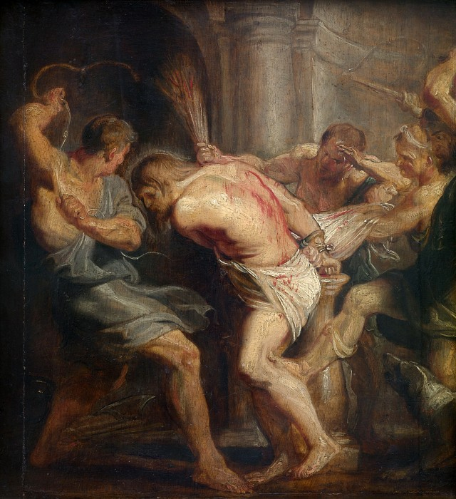
Этот библейский мотив трактован вполне реалистически – мы видим страшный эпизод так, как будто являемся свидетелями его в жизни. Мы слышим свист бича и звук ударов, ощущаем всю материальность этих тел, бешеную энергию палачей и страдальческую покорность Христа. Сама по себе композиция картины и динамика жестов вызывают ощущение злобной звериной силы, терзающей беззащитное тело скованного Человека.
Эта картина – суровое осуждение жестокости и нечестия. Несомненно, бичеватели будут гореть в адском пламени вместе с теми, кто поручил им богопротивное дело.
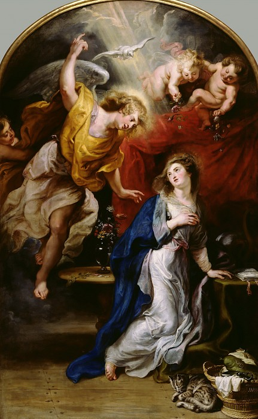
Рубенс нашёл свой оригинальный приём для изображения чувств Марии, воспринявшей благую весть от архангела Гавриила. Она трепещет от радостного испуга – её тело принимает форму синусоиды. Над нею летает голубь-дух и ангелы в столбе света. Все каноны барокко выдержаны, но Мария, на наш взгляд, недостаточно проникнута святостью – несколько простовата лицом.
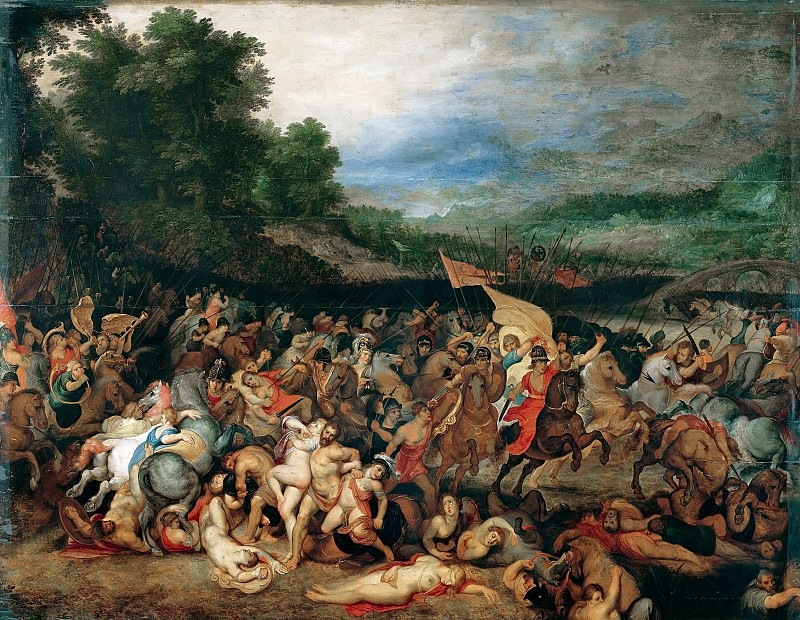
Эта картина – дань воинственному духу эпохи. Она призвана вдохновлять граждан обоих полов на ратные подвиги. Здесь как нельзя кстати барoчный переизбыток движения, энергии и обнажённых тел.
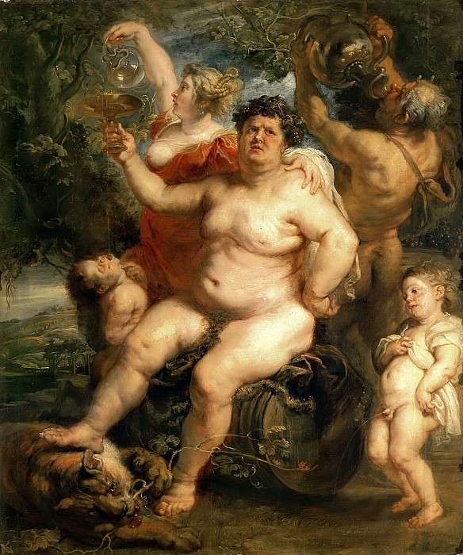
Бог вина и веселья, надутый, как мех с молодым вином, олицетворяет грех чрезмерности в потреблении алкогольных напитков. Здесь в полной мере проявилась барoчная страсть к огромному и сугубо-материальному, доходящая до раблезианского снижения всего возвышенного.
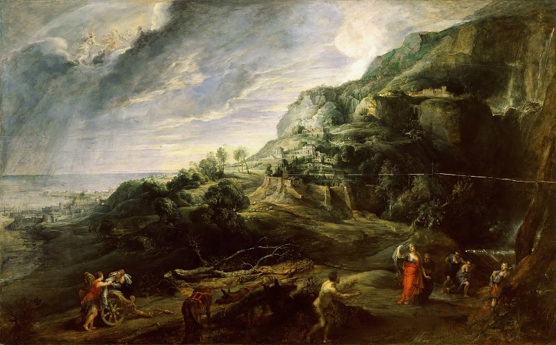
Барокко высоко чтит и превозносит Природу. В пейзажах этого стиля небо огромно, даль безбрежна, горы величественны, а люди на этом фоне – ничтожны, даже если это такие герои классического эпоса, как Одиссей и Навсикая.
Диего Веласкес
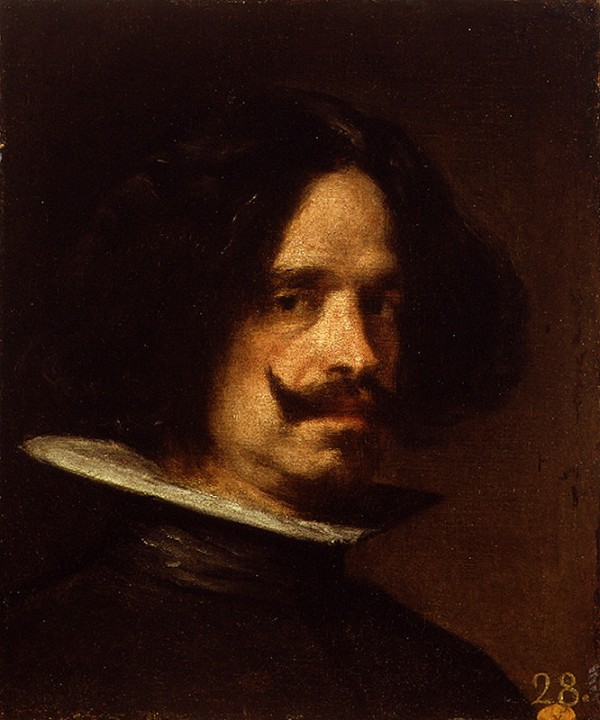
В его глазах мы читаем глубокую скорбь о бедствиях страны и разорении народа Испании злосчастного ХVII-го века. Прекрасное лицо Художника окружено непроницаемым мраком – это цвет черных дел испанских королей, католической церкви и инквизиции. Но всё же народная сила жизни ещё не угасла – это мы увидим на картинах Веласкеса, видим также и на его автопортрете – как бодро закручены его усы! Мы ещё поборемся!
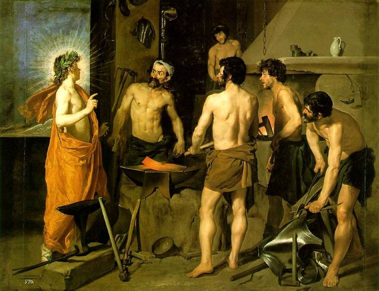
Если бы не фигура Аполлона с сияющим нимбом вокруг головы – картина было бы вполне реалистической и жанровой. Кузнецы, занятые своим делом, видят молодого бога, принесшего поразительную весть и активно реагируют на неё. Разнообразие их движений, выразительность мимики и обнажённые тела – всё это входит в арсенал средств барокко, но на смену фантастике пришли наблюдения натуры. Очень красноречива лежащая на наковальне раскалённая полоса – метафора гнева Вулкана, а также наклон его корпуса – не только от хромоты, но и от нахлынувших чувств.
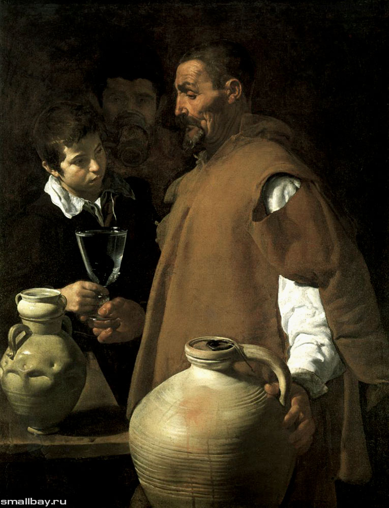
Эту картину можно отнести к стилю барокко только по одному признаку: по контрасту глубокого мрака с яркой белизной. В остальном она принадлежит стилю «реализм ХVII века», в своих лучших произведениях достигающему высот метафизического искусства. Старик-водонос – не просто трудящийся человек, добывающий нелёгким трудом свой скудный хлеб насущный. Это человек, который свою жизнь полагает на то, чтобы снабжать человечество самым необходимым – чистой водой. Он доставляет людям не просто воду – это святая вода жизни, утоляющая жажду Знания и Веры. Мы читаем эту мысль на лице мальчика, принимающего бокал с водой. Старик изображён в профиль, что делает его фигуру монументальной, (в духе старинных медалей) и значительной; даже прореха на его одежде выглядит как благородная деталь костюма, а огромный кувшин образует пластическую рифму с его высокой и крепкой фигурой.
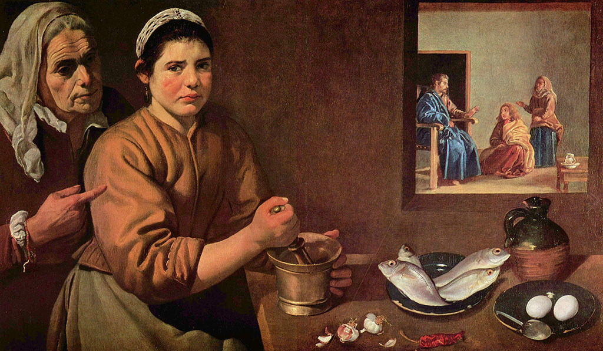
Здесь Художник достигает такого психологизма, какой впору бы русским передвижникам ХIХ века. (Лк. 10:38-42). Марфа, обиженная замечанием Иисуса, вот-вот готова заплакать. Щёки её раскраснелись, и глаза жалобно смотрят на зрителя картины, ища у него моральной поддержки. Ведь должен кто-то позаботиться о трапезе для гостей? Ведь сам Иисус не осудил учеников, когда они жевали колосья в поле, несмотря на постный день. «Суббота для человека, а не человек для субботы», - сказал Он (Мр. 2:27).
Готовить ужин для самого Спасителя – тоже богоугодное дело.
Вполне реалистически изображён натюрморт на столе и сцена беседы Христа с Марией (впрочем, реализм этот можно назвать «метафизическим»).
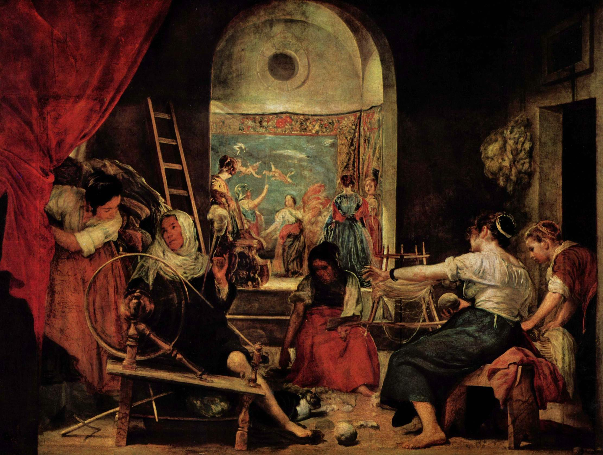
Это полотно – редкое по жизнеутверждающей силе и оптимистическому настроению. Здесь царит творческий труд, Искусство и Красота. Трудами этих простых женщин создаётся замечательный гобелен в стиле барокко, полный движения и гармоничных красок. (К сожалению, приведенная здесь репродукция не передаёт колорита картины, светлого и воздушного).
(рис. 206, 207, 208) Замечательны также портреты и жанровые картины Веласкеса, изображающие Человека не столько в его единичности и особенности, сколько в общечеловеческом плане – как тот или иной тип личности.
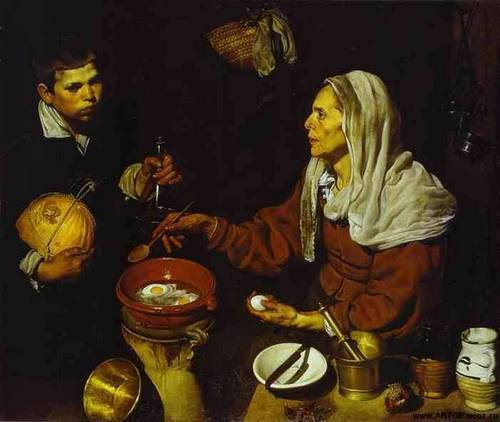
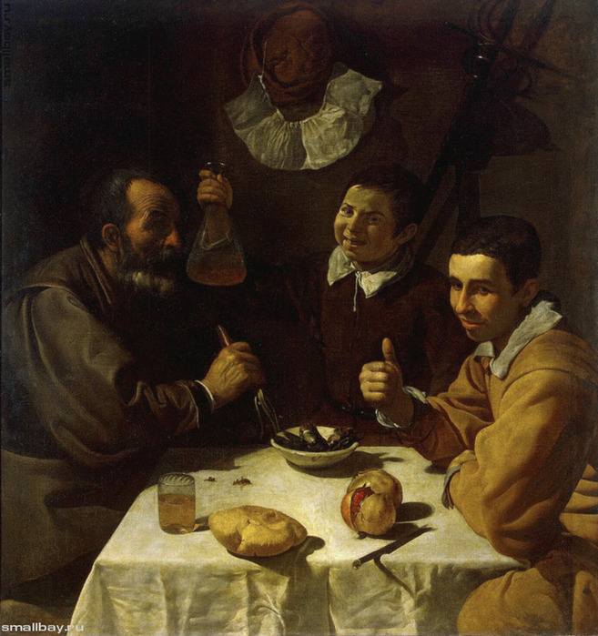
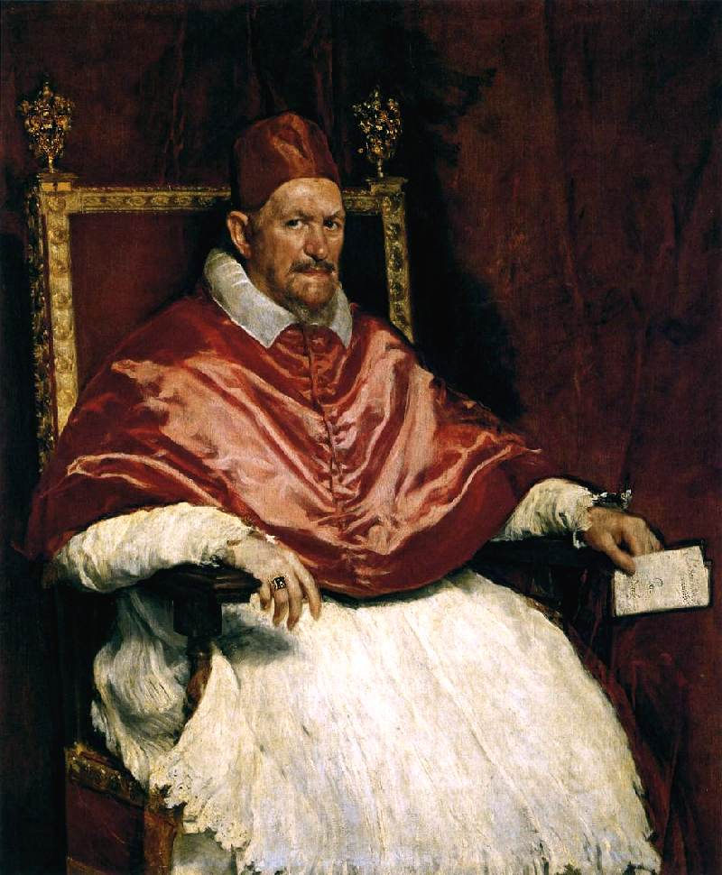
РЕМБРАНДТ ван Рейн
Об этом великом художнике написано очень много, и каждый пишущий находил в творчестве Мастера всё новые и новые достоинства. В нашем кратком обзоре обратим внимание на стилевые признаки работ голландского художника, и в особенности на то, как в его живописи мир отображается во всей своей неприкрытой реальности, однако, при этом взгляд Мастера умеет проникать в глубину вещей и явлений.
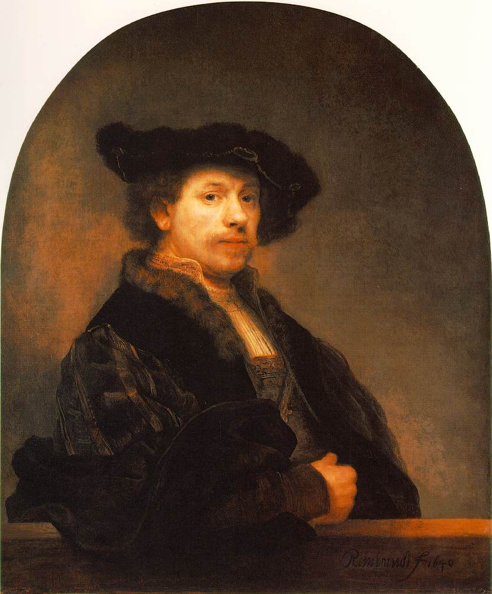
Мы видим здесь один из многих автопортретов Рембрандта. Повторяя этот сюжет много раз, он как бы следовал заповеди античной мудрости: «Познай самого себя» На этом портрете всё как будто традиционно: широкая шляпа, тёмный фон, трёхчетвертной поворот головы. Во взгляде – только внимание, без каких-либо эмоций. На лице почти отсутствует светотень. Портрет вполне реалистичен.
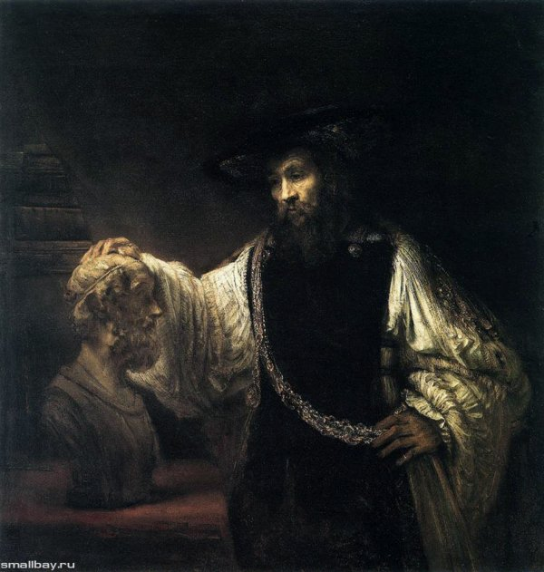
Лицо Аристотеля повторяет черты лица самого Рембрандта. Античный философ положил руку на голову великого поэта, как бы желая позаимствовать его мудрость и гениальность. В глазах философа – глубокая мысль, а на груди серебряная цепь. Это – цепь, связывающая культуру древней Эллады и Европы. Обширные черные поверхности картины символизируют тайны бытия, составляющие предмет размышлений поэта и философа.
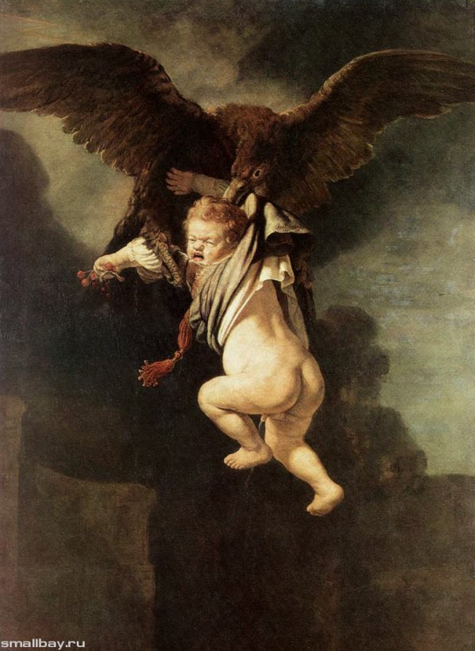
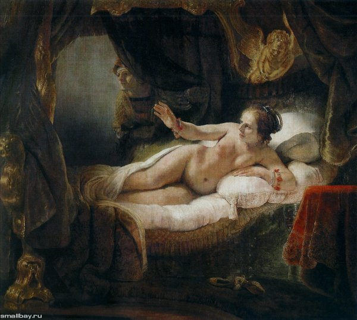
Эти античные сюжеты Рембрандт «осовременил» со всей присущей ему смелостью и несравненным мастерством. Опытные критики читают на лице Данаи возвышенное чувство радости общения с Божеством. Художник сумел убедить нас в этом.
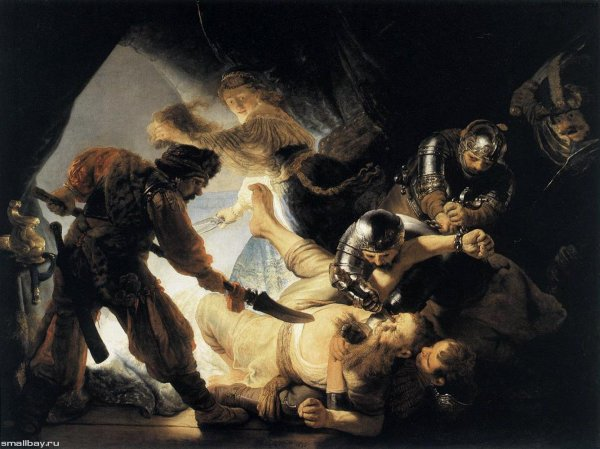
Здесь господствует дух барокко. Глубокое пространство, бешеное движение человеческих тел, разнообразие ракурсов, злодейство и мучительство, растрата человеческой энергии на бесчеловечные дела.
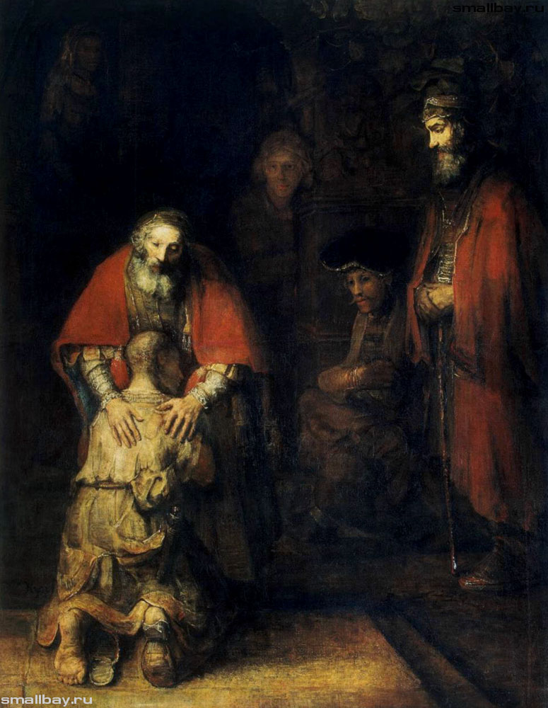
Что самое поразительное в этой картине? По-моему – босая пятка левой ноги блудного сына, свалившийся с его ноги шлёпанец и затылок, по форме повторяющий голую подошву. Более красноречиво засвидетельствовать глупость и ничтожество этого юноши – невозможно. Милосердие старика-отца не знает границ, его милосердие – это подвиг, уподобляющий отца общему Отцу человечества.
Гениальнее этой картины – последней в жизни Рембрандта – ничего быть не может. В ней назидание людям до скончания веков.
Л. Миронова,
15.10.2016